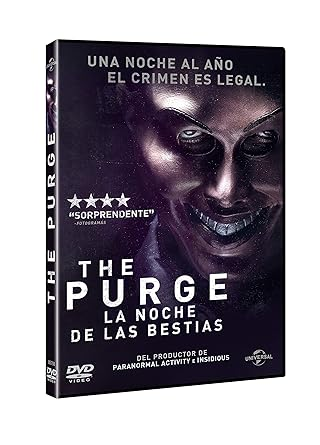
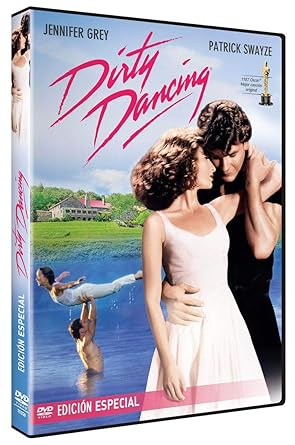
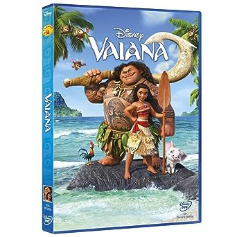

11,94€
Año 2022. En una futura sociedad distópica, el régimen político vigente, llamado Nueva Fundación de los padres de América, ha decidido como medida catárquica implantar la "purga anual", una regla por la que una noche de cada año se puede cometer cualquier crimen, incluyendo asesinatos y violaciones, sin tener que hacer frente a las consecuencias ni responder ante la justicia.
Así, cuando las viciadas nuevas reglas del mundo exterior amenacen su casa, los miembros de una familia verán su vida en peligro, en el transcurso de una terrorífica noche durante la cual todos se verán puestos a prueba para ver hasta dónde son capaces de llegar para protegerse

25,97€
Años 60. Johnny Castle (Patrick Swayze) es un experto profesor de baile y un amante consumado. Por su parte, Baby Houseman (Jennifer Grey) es una aburrida e inocente adolescente de 17 años. Un verano se conocen en el balneario donde él trabaja. Aunque pertenecen a clases sociales muy distintas, cuando la música suena y bailan al ritmo del dirty dancing, las diferencias que los separan desaparecen.
6,50€
En plena Guerra Civil norteamericana, Tuco y Rubio, un par de estafadores asociados se dedican a un lucrativo negocio. Tuco, cuyos múltiples y variados crímenes le han valido una cuantiosa recompensa por su captura, es entregado a la justicia por Rubio, en su papel de cazarrecompensas. Una vez cobrada la recompensa Rubio ayuda a liberar a Tuco en el momento en que va a ser ahorcado, disparando sobre la cuerda en el último momento, para así huir y repartirse el botín. Una serie de mutuas traiciones llevan al par de forajidos a cruzarse en el camino de Bill Carson, un soldado confederado moribundo.
Antes de morir, Carson les revela donde se encuentra escondido un botín de 200 000 dólares. El problema es que a Tuco le dice el cementerio donde se halla el botín y a Rubio en qué tumba se encuentra enterrado el oro lo cual obliga a ambos a tener que colaborar. Mientras tanto, un sanguinario oficial de la Unión conocido como Sentencia se encuentra tras la pista de Carson y su botín y no pasa mucho tiempo antes de que el camino de los tres se cruce en su búsqueda del oro enterrado..

8,26€
Una película animada sobre una adolescente aventurera que se embarca en una audaz misión para salvar a su pueblo.Durante el periplo, Vaiana cumplirá con la búsqueda que emprendieron sus antepasados y descubrirá lo que siempre había buscado: su propia identidad. Vaiana
Tiene 16 años y es hija del jefe de Motunui. Es valiente, decidida, compasiva y tremendamente lista. Nunca se da por vencida y siente una profunda conexión con el mar. Le preocupa que su pueblo no se atreva a ir más allá del arrecife que rodea la isla. Se quedan siempre dentro de los confines de ese arrecife, y Vaiana no entiende la razón, sobre todo porque ella siempre se ha sentido irresistiblemente atraída por el mar.
![]()